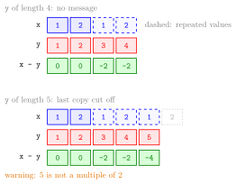

Vector Recycling¶
Definition¶
Vector recycling is what R does when an element-wise operation combines two nonempty vectors of different lengths: it repeats the values of the shorter vector from its start, as often as needed, until it has the length of the longer vector, and then pairs the elements by position. The result has the length of the longer vector.
If the longer length is a multiple of the shorter one, this happens without any message. If it is not, R gives the warning "longer object length is not a multiple of shorter object length" but still returns the result. A warning is not an error: the computation is carried out.
Recycling is temporary: the original vectors keep their lengths and values.
Interpretation¶
Recycling is R's way of making two vectors of unequal length fit together. The familiar case is a single number: in c(1, 2, 3) - 1, the vector 1 of length 1 is recycled to 1 1 1, which is why vectorized operations with a scalar work at all.

The figure shows Examples 1 and 2. In the top row x = (1, 2) (blue) is laid out twice, 1 2 1 2, under the four elements of y (red), and the differences are 0 0 -2 -2 (green). In the bottom row y has five elements; the third copy of x is cut off after its first value, so the shorter vector does not fit a whole number of times and R adds the warning (orange) but still returns 0 0 -2 -2 -4.
In linear algebra, vector addition is only defined for vectors of the same dimension; R is more permissive. Recycling is useful on purpose, for example to alternate signs with c(1, -1) (Example 3), and it is the rule behind filling a matrix from too few values and behind logical indices shorter than the vector.
The common mistake is relying on the warning to catch a length error. When the longer length happens to be a multiple of the shorter one, R stays silent, so two data vectors of lengths 2 and 4 combine without complaint even if they were meant to be equally long. Check lengths with length() before combining.
Key Results¶
- The shorter vector is repeated from its first element until it reaches the length of the longer vector; the result has the longer length.
- If the longer length is a multiple of the shorter length, there is no message; otherwise R warns but still computes.
- A single number combined with a vector is the special case of a vector of length 1.
- The original vectors are not changed: recycling only affects the computation.
matrix()also recycles its data to fill all cells; for examplematrix(1:3, nrow = 3, ncol = 4)repeats1 2 3in each of the four columns.
Examples¶
1. A length that divides evenly.
R computes c(1, 2, 1, 2) - c(1, 2, 3, 4) without a message, and x still has length 2.
2. A length that does not divide evenly.
x <- c(1, 2)
y <- c(1, 2, 3, 4, 5)
x - y
#> [1] 0 0 -2 -2 -4
#> Warning message:
#> In x - y : longer object length is not a multiple of shorter object length
3. Recycling on purpose.
The pair 1, -1 is repeated twice, so every second element changes sign.
4. Pitfall: a silent mismatch. Sales were recorded for four quarters, and a growth factor was meant to be given per quarter, but only two factors were typed.
R recycles growth to 1.1 1.05 1.1 1.05 and returns four plausible-looking numbers without any warning, because 4 is a multiple of 2. Comparing length(sales) with length(growth) reveals the problem.
Prerequisites¶
Related Concepts¶
Sources¶
- Programming for EOR · Week 1
- Lecture script Data Types and Structures (Part 2), part "Scalars & Vectors"; Matrix operations, random numbers and optimisation (Week 5), "Constructing matrices and special matrices"
Aliases: recycling rule, recycling in R, longer object length is not a multiple of shorter object length Keywords: unequal lengths, shorter vector repeated, recycling warning
Last updated: 10 November 2026 16:43
Vector RecyclingVectorized ifelse()Matrices in RVectorized OperationsAtomic VectorRepeating Values with rep()Logical SubsettingVector Addition